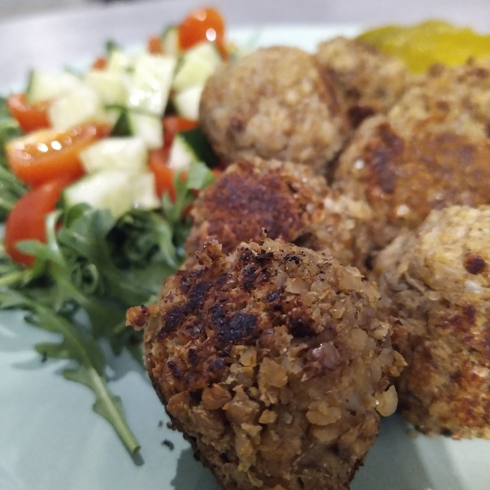

Wegańskie klopsy
Prawdziwy "domowy" obiad. Mogę się założyć że nawet wielbicielom mięsa bardzo posmakuje taka wersja klopsów.
Składniki
- szklanka kaszy gryczanej palonej
- szklanka brązowej soczewicy
- szalotka
- sól
- pieprz
- papryka wędzona
- czosnek suszony
- cebula suszona
Przygotowanie
Przepis pojawi się wkrótce... Obiecuję że warto czekać!